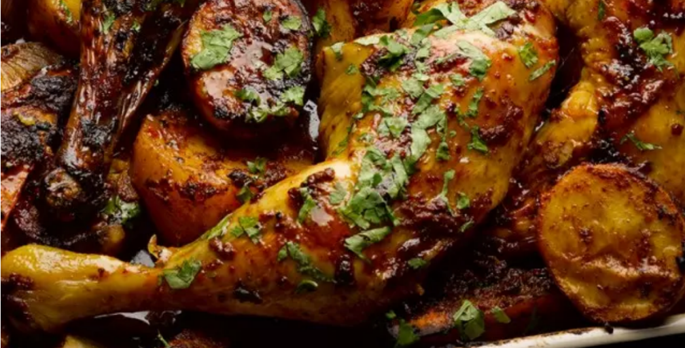

Sweet and smoky Mexican inspired chicken

This reimagined chicken dish highlights chipotle, a smoke dried jalapeño to add intense heat, smoke and depth.
Heat the oven to 200C/390F/gas mark 6. Put the peppers on a baking tray and roast for 30 minutes, until the skin has blackened. Transfer to a small bowl, cover with cling-film and set aside. Once cool enough to handle, peel the peppers, and discard the skins, seeds and stalks. Put the pepper flesh in the small bowl of a food processor, and add the cinnamon, chilli, garlic, vinegar, sugar, three tablespoons of the oil, a teaspoon and half of salt and three tablespoons of water. Blitz for a minute, until smooth, then transfer to a large bowl. Add the chicken legs and chocolate, and mix to coat.
Put both types of potato in a separate large bowl with the onions, the remaining oil, half a teaspoon of salt and a good grind of pepper. Mix well, combine with the chicken, then tip everything on to a large 30cm x 40cm baking tray. Arrange the chicken skin-side up and roast for about 50 minutes, until the chicken and vegetables are cooked and nicely coloured. Serve at once, with coriander sprinkled on top.